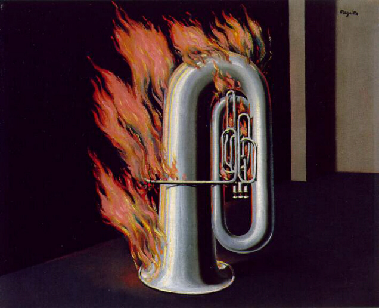

A proposito di questa immagine Magritte scrisse:
"La decouverte du feau mi dette il privilegio di conoscere lo stesso sentimento che provarono i primi uomini quando fecero scaturire la fiamma percuotendo assieme due pezzi di pietra. Immaginai a mia volta di far bruciare un pezzo di carta, un uovo ed una chiave."
Il pittore belga accusò inoltre Dalì di aver copiato inpunemente questa opera per dipingere la "Giraffa in fiamme".